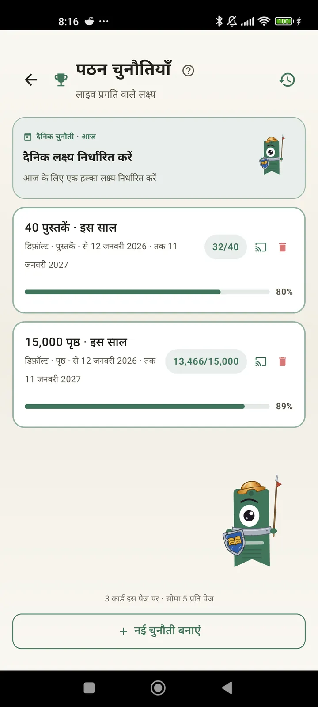

एक पाठक के रूप में खुद को जानें
चुनौतियाँ, Bingo, विजेट और ऐसे कई फ़ीचर, ताकि आप अपनी पढ़ाई का पूरा फ़ायदा उठा सकें। 3.7 में नया: चुनौतियों और Bingo के विजेट।

पठन चुनौतियाँ
पन्नों, स्ट्रीक या शैलियों के हिसाब से लक्ष्य तय करें। 15 तक सक्रिय चुनौतियाँ मुफ़्त, Pro के साथ असीमित। साथ में एक कस्टमाइज़ करने लायक दैनिक चैलेंज, जो सीमा में नहीं गिना जाता।

दैनिक चैलेंज
हर दिन एक नया लक्ष्य। अपनी स्ट्रीक बनाए रखने के लिए आधी रात से पहले चैलेंज पूरा करें।

पढ़ने वाला Bingo
हर महीने थीम वाले खानों के साथ दो नए Bingo। पंक्तियाँ, कॉलम या पूरा कार्ड पूरा करें।

साप्ताहिक सारांश
हर सोमवार आपके सप्ताह की झलक: पढ़े गए पन्ने, कुल समय, स्ट्रीक और पिछले सप्ताह से तुलना।

मासिक सारांश
महीना खत्म होने पर Lecturameter उसका सार बताता है: पन्ने, समय, पूरी की गई किताबें, दिन-ब-दिन आपकी रफ़्तार और आपकी महीने की किताब।

Bingo विजेट Pro
इस महीने का Bingo कार्ड हमेशा सामने, आपके पूरे किए खानों और बनाई गई लाइनों के साथ।

किताब विजेट मुफ़्त
जो किताब आप पढ़ रहे हैं, उसे सीधे होम स्क्रीन पर देखें: कवर, शीर्षक, लेखक, पन्ने और प्रगति प्रतिशत, हमेशा अपडेट। जहाँ चाहें फिट करने के लिए आकार बदल सकते हैं।
सच में भाई, यह ऐप थेरेपी जैसा लगता है, मैं दिन में दो-चार पन्नों से अब करीब 20 पन्ने रोज़ पढ़ने लगा हूँ और सुधार जारी हैईमेल से भेजी गई उपयोगकर्ता की प्रतिक्रिया

मासिक तुलना Pro
ऐप खोले बिना अपने पिछले महीनों पर एक नज़र। हर महीने के पन्नों के बार, मौजूदा महीना हाइलाइट किया हुआ, ताकि एक नज़र में पता चले कि इस महीने आप पिछले महीने से बेहतर कर रहे हैं या नहीं।

चुनौतियाँ विजेट Pro
होम स्क्रीन पर आपकी सक्रिय चुनौतियाँ और उनकी प्रगति। कौन-सी दिखानी हैं, यह चुनौतियाँ स्क्रीन से चुनें।